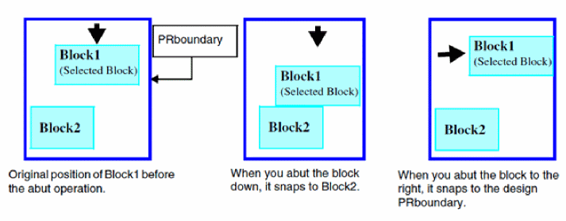

Soft Blocks and Pins Adjustment
The Adjust Blocks/Pin command enables you to adjust the existing Floorplan by abutting and pushing the soft blocks and pins in the design. These commands work only in the pre-selection mode.
When you invoke the Adjust Blocks/Pin command by clicking Soft Block Update – Adjust Blocks/Pin, the Floorplan toolbar expands to display the Adjust Blocks sub-toolbar. You can invoke the Adjust Blocks sub-toolbar by clicking the Adjust Blocks/Pin icon as well. The following graphic shows the sub-toolbar.
The Adjust Blocks/Pin command supports three sub-commands, Abut, Push, and Push Max, and each sub-command supports four actions, up, down, left, and right. These commands enable you to operate on the selected block or pins when you click the arrow icons. For example, to abut a soft block to the bottom of the design PR boundary, select the soft block and click the down arrow icon. The soft block abuts to the bottom of the design PR boundary.
The following table describes the various Adjust Blocks/Pin commands.
|
Command
|
Description
|
|
Abut
|
Moves the selected block in the specified direction until it abuts another block or the PR boundary. Similarly, you can use this option to move and abut pins in the specified direction. When you abut a soft block, the soft block does not overlap another block or move off the design PR boundary.

|
|
Push
|
Moves the selected block or pin in the specified direction by the number of units you specify in the By option. The Push option does not check for overlapping blocks or pins, but does not move off the design PR boundary. Each time you click an arrow icon, the selected block moves in the specified direction until it reaches the design PR boundary. If it abuts another block, it pushes the block as well until the adjacent block reaches the PR boundary. If you continue to further push the block in the same direction, the selected block overlaps the adjacent block until the selected block reaches the design PR boundary, as shown in the graphic. A similar behavior is observed when the command is run on a selected pin.
|
|
Push Max
|
Pushes the selected block or pin in the specified direction until it abuts the PR boundary. This option works the same way as the Push option, except that it pushes the soft block or pin to the PR boundary in one go. If another block lies in the path of the selected block, the Push Max option pushes the block to the PR boundary. The Push Max option ensures that the soft block does not overlap another block or move off the core area. A similar behavior is observed when the command is run on a selected pin.
|
Related Topics
Pushing Top-level Power Structures into Soft Blocks
Top-Level Power Structures Pushed into Block Level
Push Into Blocks Form
Return to top